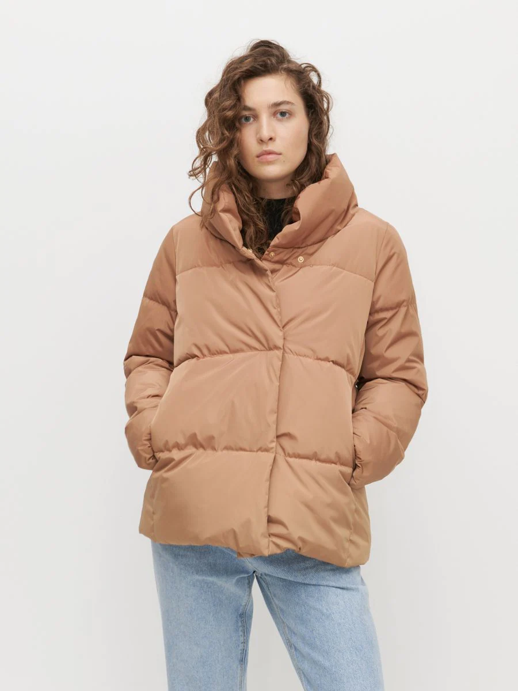
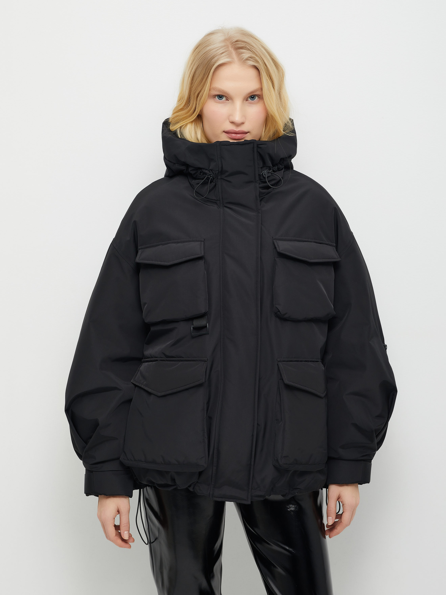
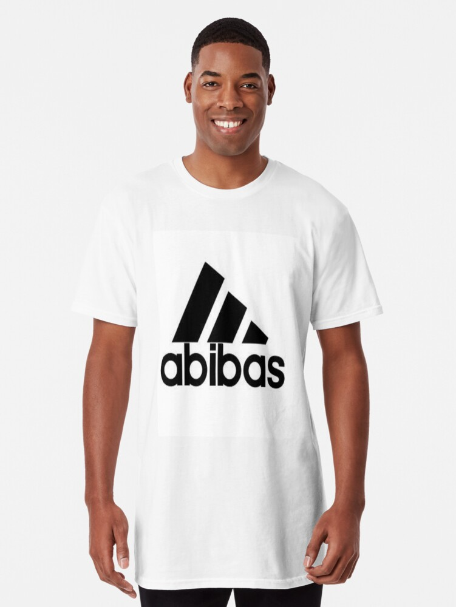
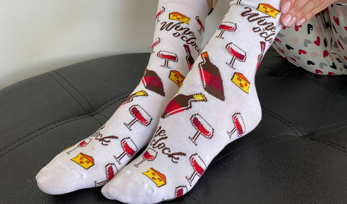
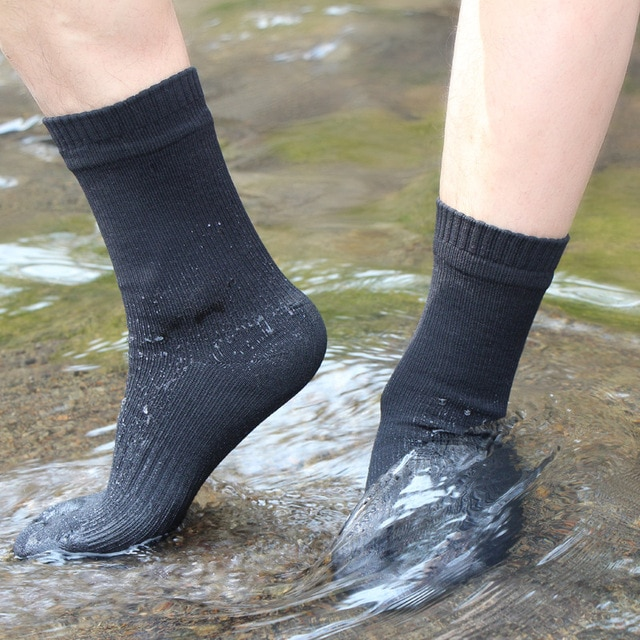
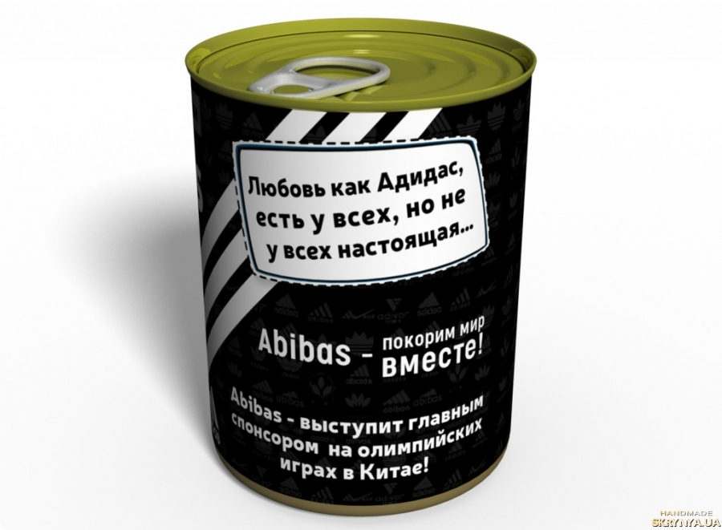
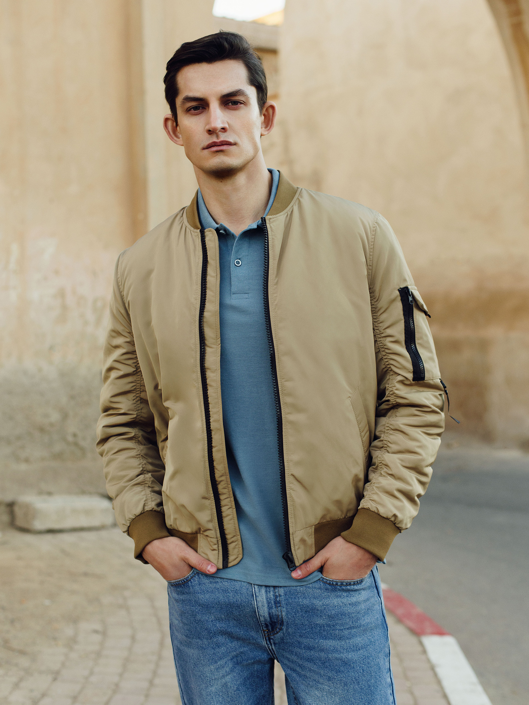

{% extends "base.html" %}

{% block pagename %}Abibas{% endblock %}

{% block main %}
<style>
	.img-line {
<!--		border: 2px solid #55c5e9; /* Рамка вокруг фотографии */-->
		padding: 15px; /* Расстояние от картинки до рамки */
		margin-right: 10px; /* Отступ справа */
		margin-bottom: 10px; /* Отступ снизу */
    }
	</style>
<p class="img-line">

	
	
	
	
    
    
	
	
   	
	
	
	
	
	
	
	
	
	
	

	</p>
{% endblock %}